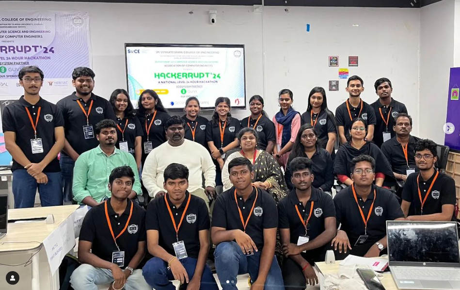
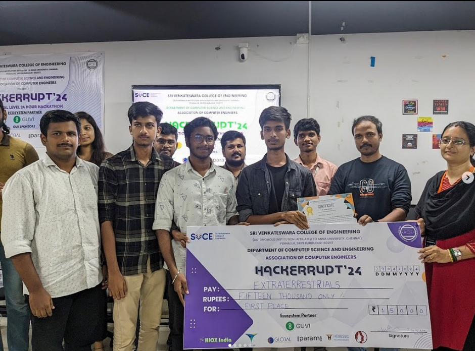

ACE Hackerruppt
Greetings from the Association of Computer Engineers (ACE)✨
🔥 Calling all tech aficionados and coding virtuosos! 🔥
Prepare to immerse yourself in a whirlwind of innovation and problem-solving prowess at Hackkerupt'24! 🌟 Join us for an electrifying hackathon experience where
you'll collaborate, code, and craft revolutionary solutions, all while being guided by seasoned industry professionals.
Aim and Objective of Hackkerupt'24
Aim:
To create a dynamic and challenging environment where participants can showcase their coding skills, innovate solutions to real-world problems,
and gain valuable insights from industry experts.
Objectives:
Foster Innovation:
Encourage participants to think outside the box and develop innovative solutions to pressing problems in various domains.
Enhance Technical Proficiency:
Provide a hands-on coding experience through intensive hackathon sessions, allowing participants to apply their theoretical knowledge in practical scenarios.
Promote Team Collaboration:
Facilitate teamwork and collaboration by forming diverse teams that bring together different skill sets and perspectives.
Provide Expert Guidance:
Offer mentorship and guidance from seasoned industry professionals to help participants refine their ideas and improve their technical solutions.
Stimulate Problem-Solving Skills:
Challenge participants with real-world problems that require creative and efficient solutions, thereby enhancing their analytical and problem-solving abilities.
Facilitate Networking:
Create opportunities for participants to network with peers, industry experts, and potential employers, fostering a community of learning and growth.
Recognize and Reward Excellence:
Acknowledge and reward the most innovative and effective solutions, encouraging a spirit of healthy competition and excellence.
Encourage Participation:
Ensure an inclusive and supportive environment where participants of all skill levels feel motivated to participate, learn, and excel.
Join us at Hackkerupt'24 for an unforgettable hackathon experience that blends creativity, coding, and collaboration. Let's revolutionize the tech world together!
GALLERY


Back